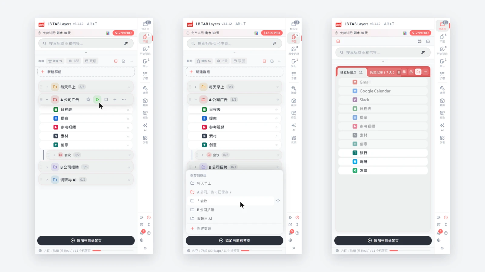
按 Alt+T（Mac 上是 Option+T）即可打开 LB TAB Layers。刚开始只需要记住三件事：用添加当前标签页保存正在看的标签页，用 ▶ 打开整个群组，用 ■ 再把它关上。你保存的内容都会留在 Chrome 书签里，所以关闭标签页或重启 Chrome 之后，它们依然还在。
感谢你安装 LB TAB Layers。这一页只讲最初 5 分钟用得上的内容。
思路很简单。标签页是“现在”：你正在处理的事。书签是“以后”：之后还要回来看的东西。今日历史是“记录”：今天看过的网页。有了 LB TAB Layers，在一个侧边栏里就能在这三者之间切换。
💡 随时按 Alt+T（Mac 上是 Option+T）就能打开。也可以点击工具栏上的 LB TAB Layers 图标。如果看不到图标，请点击拼图图标，把 LB TAB Layers 固定到工具栏上。
首先：复制现有的书签来开始（推荐）
如果你在 Chrome 里已经有书签，先把它们复制到 TAB Layers 是最快的开始方式。原书签不会被移动，不用担心丢失。
点击“从你的书签开始（推荐）”
它在安装后出现的欢迎页面的最上方。
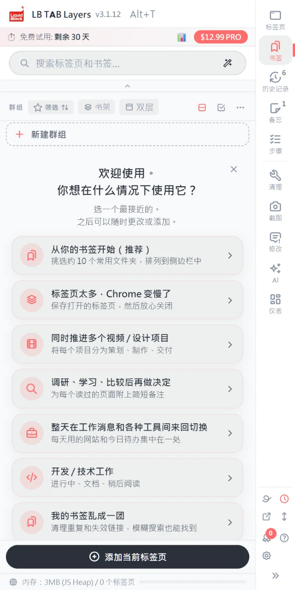
点击“OK”进行复制
页面会显示将要复制的书签数量。原书签不会被移动，会保持原样。即使书签很多，也只需几秒钟。
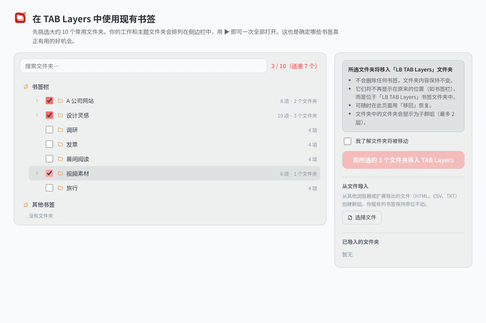
把一个常用网页移到“我的第一个项目”
复制的书签会集中在名为“现有书签（日期 复制）”的暂存区里，每个文件夹会变成子群组。点击常用网页那一行右端的“→ 我的第一个项目”，该网页就会移过去。暂存区不计入免费版的群组数量上限（5 个）。
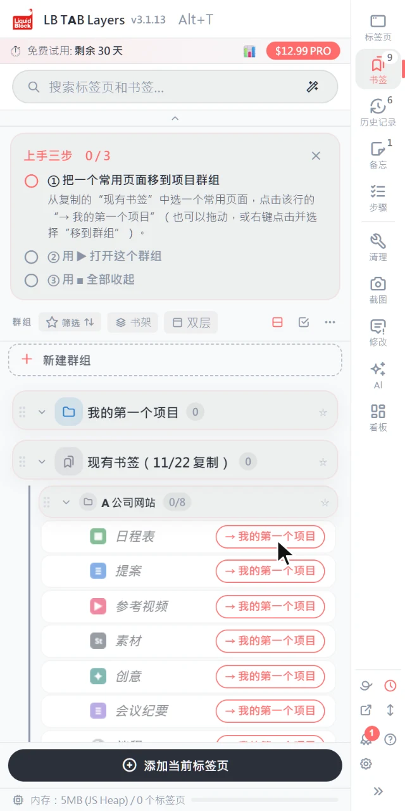
之后用 ▶ 打开，用 ■ 关闭
顶部的“上手三步”卡片会一步一步告诉你接下来做什么。如果书签有 200 个以上，它还会建议你在大屏幕（仪表板）上整理。
💡 也可以选择文件夹，直接作为群组移过来。可以从 设置 → 数据 → 书签 打开，或者点击全屏仪表板顶部的“导入书签”。从其他浏览器或扩展程序导出的文件（HTML、CSV、TXT）也可以从那里导入。用熟之后，还会提示你把原书签整理到一个文件夹里（不会删除任何内容，随时可以撤销）。
1. 认识界面
侧边栏的边缘有一列按钮：标签页、书签、历史记录、备忘和步骤。点击其中一个，就会切换到对应的视图。按钮上的小数字表示打开了多少个标签页、有多少个群组等。
- 标签页：现在开着、还没有保存到任何地方的标签页
- 书签：你保存下来的标签页，按群组归类，一个项目一个群组
- 历史记录：今天访问过的网页，包括没有保存的
- 备忘和步骤：工作中的备忘，以及一步一步完成的清单
分隔线下面是各种工具。第一天还用不到它们。
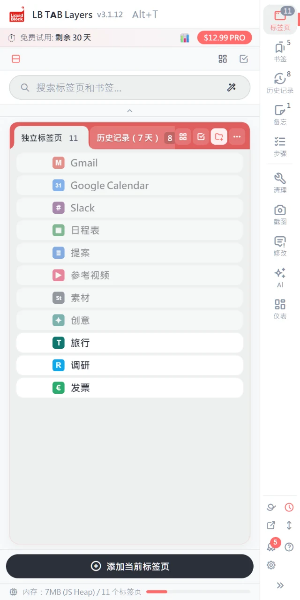
2. 基本操作
创建群组
在书签视图中，点击列表顶部的+ 新建群组。用一项工作来命名，比如“C 公司网站”或“每天早上”。一个项目一个群组，用起来最顺手。
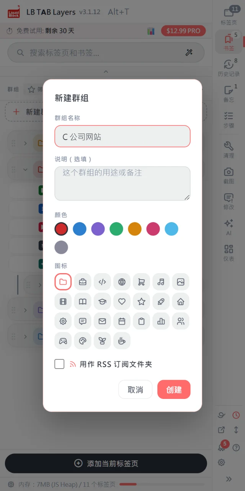
保存当前标签页
点击侧边栏底部的添加当前标签页，然后选择一个群组。已经存有这个网页的群组会标着已保存。
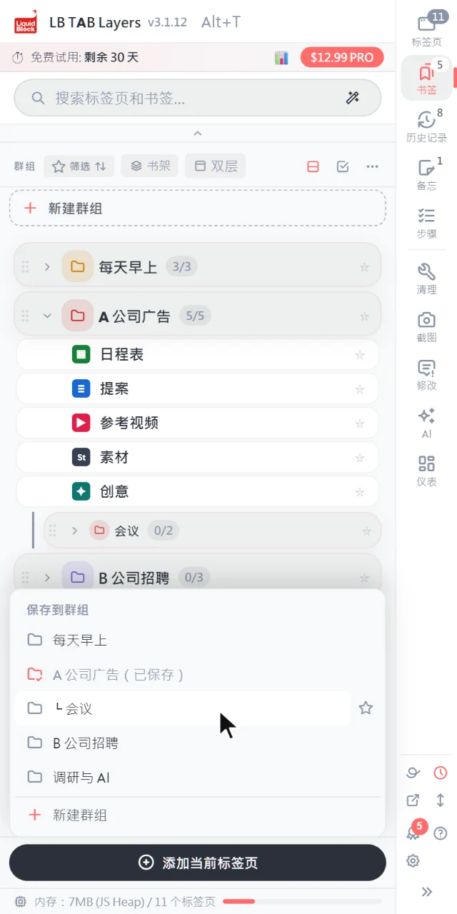
一次保存多个打开的标签页
在标签页视图中，点击某个标签页左侧的圆圈开始选择。接着点击其他想保存的标签页的圆圈，再点击底部的移到群组，选择一个群组。也可以把标签页一个一个拖到群组上。
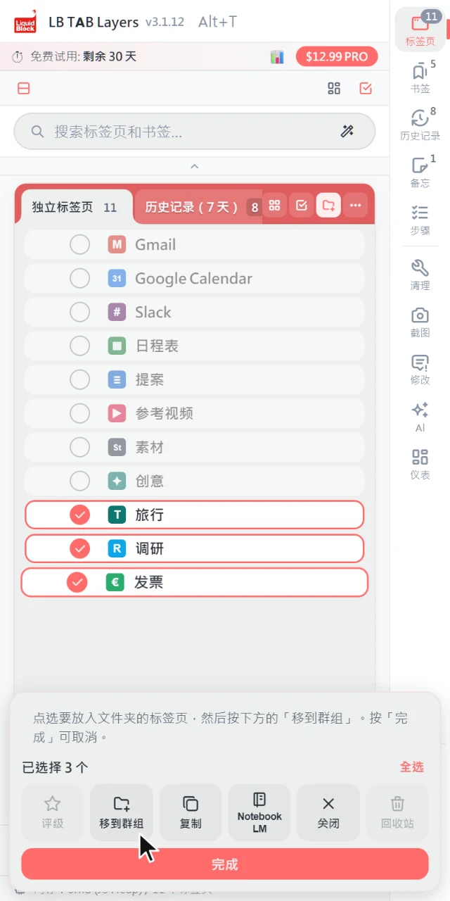
用 ▶ 全部打开，用 ■ 全部关闭
把鼠标移到群组上，点击 ▶ 就能打开其中的所有标签页。它们会作为一个 Chrome 标签页组一起打开，名称和颜色都与你的群组相同。用完之后，点击 ■ 就能把这个标签页组一次关掉。保存的标签页不会丢。
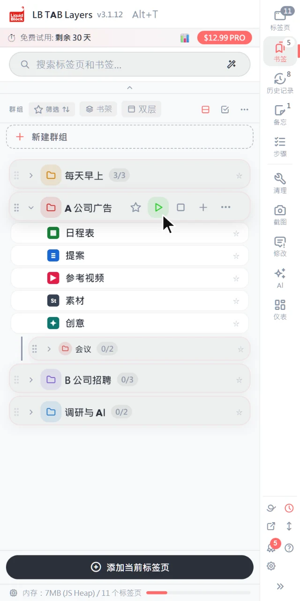
搜索
在顶部的搜索框里输入文字，就能同时搜索打开的标签页、保存的标签页和今日历史。打错一两个字也没关系。
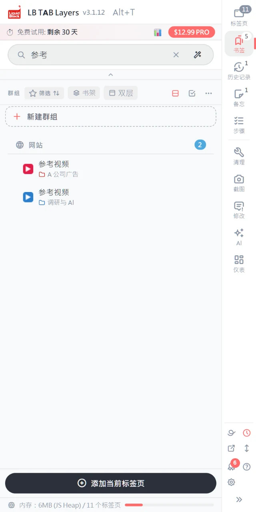
3. 一种简单的工作整理方法
一个项目一个群组
可以把群组想成专门处理一项工作的办公桌。一整天都可以这样安排：
- 早上：在今天的项目上点击 ▶，从上次停下的地方接着做
- 切换工作时：用 ■ 关掉当前的项目，再用 ▶ 打开下一个
- 下班时：只要点击 ■。明天点一下 ▶，一切都会回来
每天都用的网站，放到固定栏
像邮箱、日历这样每天都要打开的网站，可以右键点击标签页或书签，选择添加到固定栏。它们会变成小图标排在侧边栏顶部，点一下就能打开（最多 12 个）。也可以直接把它们拖过去。
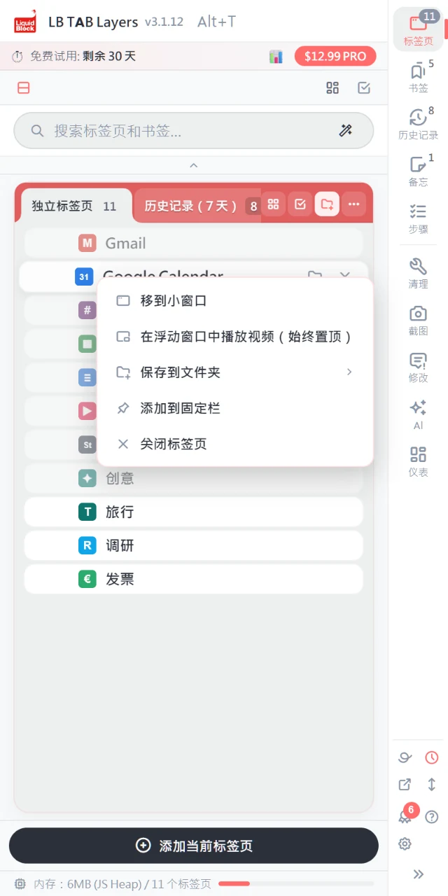
每个项目一个窗口
右键点击群组，选择在新窗口中打开，它就会作为标签页组在另一个窗口中打开。同时处理两件事，或者使用第二台显示器时，这样很方便。
忘了保存？今日历史里还有
不必什么都保存。没保存的网页仍然在历史记录里，按今天访问的顺序排列。重要的存进群组，其余的关掉，大多数时候这样就够了。
🔒 你保存的内容都会留在 Chrome 书签里。保存的标签页在你关闭它们或重启 Chrome 之后依然还在，LB TAB Layers 也不会把你的书签发送到任何地方。备忘等保存在扩展程序内部的数据，可以在“设置”中导出。
还有十个常用操作，请看操作指南（英文）。
常见问题
Q. 怎样打开 LB TAB Layers？
按键盘上的 Alt+T（Mac 上是 Option+T）。也可以点击工具栏上的 LB TAB Layers 图标。
Q. 卸载扩展程序后，保存的标签页会消失吗？
不会。保存的标签页会留在 Chrome 书签里，所在的文件夹与你的群组同名。备忘等保存在扩展程序内部的数据会被删除，所以请先在“设置”中导出。
Q. 搜索框会搜索哪些内容？
打开的标签页、保存在群组里的标签页，以及今日历史，一次全部搜索。
Q. 可以免费使用吗？
可以。免费版最多可创建 5 个群组。今日历史、步骤、仪表板和 AI 搜索是 PRO 功能，安装后 30 天内可以使用全部功能。